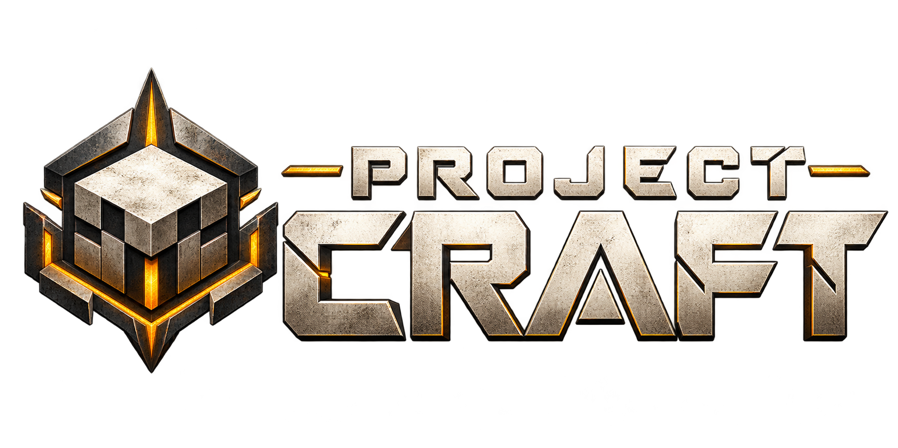
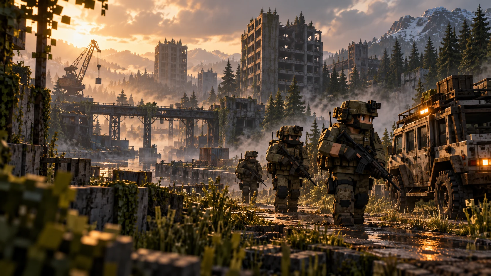

BASE DE OPERAÇÕES / BRASIL
MINECRAFT JAVA · MMOFPS · SURVIVAL SANDBOX

Sua próxima
inserção.
Um mundo em ruínas. Uma nova linha de frente.
Prepare o equipamento. Encontre seu esquadrão.

TRANSMISSÃO DA BASEDESENVOLVIMENTO ATIVO
O território ganhou vida.
Patrulhas armadas, paraquedas, banco pessoal e voz por proximidade. Acompanhe as novidades da comunidade.
DESTINO DA OPERAÇÃOConsultando endereço…Endereço atualizado pela equipe
Conectando aos canais oficiais de atualização…
INSTALAÇÃO GERENCIADA